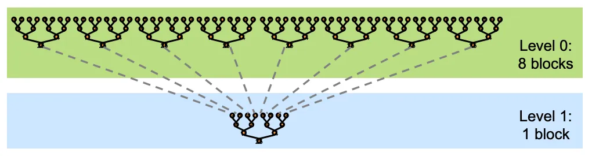

写在前面
📚 版权声明 | Copyright Notice
本文内容参考并部分翻译自以下两篇资料：
- NVIDIA 官方 PPT（reduction.pdf）
- Medium 博客：7 Step Optimization of Parallel Reduction with CUDA
上述资料版权归原作者所有。本文旨在学习和技术传播，仅供个人和学术使用。如有侵权，请联系删除。
This article is a study and partial translation based on the works above. All rights belong to the original authors. The content is shared for learning and research purposes only. Please contact for removal if there is any infringement.
⚠️ 若上述链接失效，读者可以在 Google 中使用关键词查找： 7 Step Optimization of Parallel Reduction with CUDA
本文将介绍如何优化 CUDA 中的并行规约算法 (Parallel Reduction)，并通过七个步骤逐步提升性能。尽管上述链接中作者已经说明的十分清楚。我这里还是会使用中文再走一边流程，一来为中文互联网提供参考资料，二来为我自己学习。
CUDA并行代码与串行代码的整体设计思路相差很大，虽然是按照线程来编写，但是要从Block层面去思考和设计。
什么是 Parallel Reduction 算法？
让我们首先了解一下 Parallel Reduction 算法的基本概念。它是一种 数据并行原语，在 CUDA 中实现相对直接。简单来说，Parallel Reduction 的目标是通过 GPU 的线程层级结构并行地对向量、矩阵或张量进行归约操作。
这种归约是通过如 sum()、min()、max() 或 avg() 等操作来实现的，用于对数据进行聚合与简化。事实上，对一个数组求上述操作是十分简单的，如果想实现 CUDA 并行，核心难度在于访存设计。若处理不当，即使是这些“看似简单”的计算也可能变得耗时。
高效实现 Parallel Reduction 的一个原因是它们非常通用，并在许多应用中起着关键作用。我主要使用SPH研究小行星撞击，每一步SPH求解过程中，都需要进行包围盒计算，对应着 min()、max() 操作。
树形归约模型（Tree-based Reduction）
并行归约可以被类比为一种“树状归约”（tree-based reduction）过程：数据在各线程块（thread block）之间逐层归约。
但这里出现了一个关键问题：
我们如何在不同线程块之间传递中间结果？
最直接的想法是使用“全局同步（global synchronization）” —— 先让每个线程块完成一部分计算，然后进行全局同步并继续递归处理。
然而，CUDA 并不支持全局同步，因为这在硬件上开销极大，还可能导致死锁，只能使用少量线程块，限制性能提升。
📌 更实用的方案是：Kernel 分解（Kernel Decomposition）
Kernel 分解（Kernel Decomposition）
为了更高效地传递线程块间的中间结果，我们可以将一个大的 kernel 拆分为多个小 kernel。这种做法被称为 Kernel 分解。

Kernel 分解的优势包括：
- 减少硬件与软件开销
- 提高资源利用率
- 避免线程块间同步
- 提升整体执行效率
注意！
本文重点讲解规约（reduction）的基本思想，而非完整的最终实现。因此，每个 kernel 的执行结果并不是一个全局单一值，而是 每个 block 内部的规约结果。
具体来说：
- 每个 block 负责处理若干个线程的(
blockDim)数据，并在 block 内完成一次局部规约； - 每个 block 的结果会被写入输出数组的
blockIdx.x位置； - 因此，最终输出数组的长度等于
gridDim.x（即 block 数量），而不是单个元素。
性能衡量指标（Our Metrics）
我们衡量并行归约算法性能的两个关键指标是：
- 时间（Time）
- 带宽（Bandwidth）
这两个指标反映了 GPU 是否达到了峰值性能。我们希望在以下两方面进行优化：
- 提高数据读写效率
- 加快计算速度、提升线程利用率
一段理想的 GPU 程序，不仅运行快速，还能使大多数线程都在工作。
REDUCE-0：交错寻址法（Interleaved Addressing）
思路介绍
最朴素的一种并行归约方法是采用“交错寻址（Interleaved Addressing）”，作为我们优化过程的基础版本。在这种方法中：
- 每个线程处理一组元素；
- 每轮归约时，线程将其当前值与一段距离内的另一个元素值相加；
- 每轮步长加倍，直到最终得出该 block 的归约结果。
📘 例如，对于一个 1024 元素数组，使用 256 线程块，每个线程处理四个间隔为 256 的数据点。
这种方式可以确保：
- 各线程并行工作，负载均衡；
- 线程间同步更简单；
- 便于 GPU 高效执行。
CUDA 代码实现
// REDUCTION 0 – Interleaved Addressing
__global__ void reduce0(int *g_in_data, int *g_out_data){
extern __shared__ int sdata[]; // stored in the shared memory
// Each thread loading one element from global onto shared memory
unsigned int tid = threadIdx.x; //tid表示当前线程在所在 block 中的局部索引
unsigned int i = blockIdx.x * blockDim.x + threadIdx.x;//i表示当前线程在整个 grid 中的全局线程编号
sdata[tid] = g_in_data[i];
__syncthreads();
// Reduction method -- occurs in shared memory because that's where sdata is stored
for(unsigned int s = 1; s < blockDim.x; s *= 2){
if (tid % (2 * s) == 0) {
sdata[tid] += sdata[tid + s];
}
__syncthreads();
}
if (tid == 0){
g_out_data[blockIdx.x] = sdata[0];
}
}
该方法存在的问题
虽然这种方法是并行编程的良好基础，但它仍存在一些问题。让我们回顾一下性能指标，分析代码在计算和内存方面可能存在的低效之处。
计算方面： 一个主要的计算低效是 % 操作符的使用。由于 % 涉及除法操作，而除法在底层是非常慢的操作，这会严重影响性能，特别是在大量线程频繁执行该操作的内核中。此外，交错寻址模式导致了严重的 warp 发散（divergence），因为同一个 warp 中的线程需要执行不同的分支路径（基于当前的 if 条件）。这种路径发散导致 warp 需要等待较慢的线程完成，造成阻塞，从而严重降低性能。具体而言，代码块：
for(unsigned int s = 1; s < blockDim.x; s *= 2){
if (tid % (2 * s) == 0) {
sdata[tid] += sdata[tid + s];
}
__syncthreads();
}
第一个for，激活的线程为0，2，4...；第二次执行for循环，激活的线程为0，4，8... 显然，每个for循环中只有有50%，25%。。。的线程处于激活状态，这显然是我们不想看到了。我们希望尽可能多的线程都处于工作状态，至少在同一个warp中是如此。
内存方面： 由于 warp 发散，该方法的内存访问模式不佳。每个线程访问的数据元素分布在整个数组中，导致内存访问分散而非合并访问（coalesced），从而造成带宽利用率低下和较高的内存延迟。这种分散访问会引起多次缓慢的内存事务，而非一次快速事务，未能充分利用 GPU 的内存带宽能力。不过，这个问题我们会在后续的优化中开始解决。具体来说 轮次 5: s = 16 if (tid % 32 == 0): 在Warp 0 (线程0-31)中，只有线程0在工作。 它读取 sdata[16]。 访存分析: 整个Warp为了满足线程0这一个读取请求，发起了一次内存事务。但这次事务中，只有1/32的数据被利用了。31/32的内存带宽被浪费了！
首先，我们先关注计算相关的问题，并进行下一步优化。
REDUCE-1：交错寻址法 2.0（Interleaved Addressing 2.0）
// REDUCTION 1 – Interleaved Addressing 2.0
__global__ void reduce1(int *g_in_data, int *g_out_data){
extern __shared__ int sdata[]; // 储存在共享内存中
// 每个线程从全局内存加载一个元素到共享内存
unsigned int tid = threadIdx.x;
unsigned int i = blockIdx.x * blockDim.x + threadIdx.x;
sdata[tid] = g_in_data[i];
__syncthreads();
// 归约操作 -- 在共享内存中进行
for(unsigned int s = 1; s < blockDim.x; s *= 2){
// 注意步长 s *= 2：这导致了交错寻址
int index = 2 * s * tid; // 现在我们不再需要 if 条件带来的分化分支
// 确保不会越界访问
if (index < blockDim.x)
{
sdata[index] += sdata[index + s]; // s 用来表示将被合并的偏移量
}
__syncthreads();
}
// 线程0将最终结果写回全局内存
if (tid == 0){
g_out_data[blockIdx.x] = sdata[0];
}
}